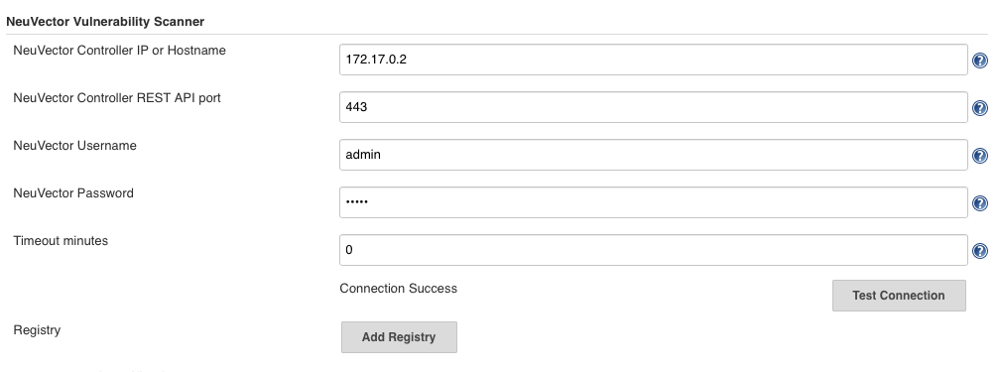
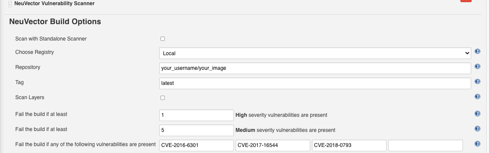
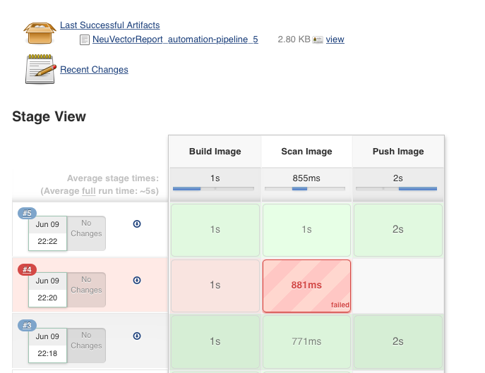
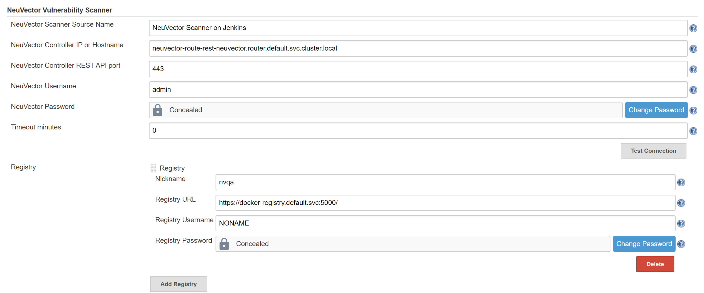

Détails de Jenkins
Configuration détaillée pour le plug-in Jenkins
Les conteneurs offrent un moyen facile et efficace de déployer des applications. Mais les images de conteneurs peuvent contenir du code open source sur lequel vous n’avez pas un contrôle total. De nombreuses vulnérabilités dans les projets open source ont été signalées, et vous pouvez décider d’utiliser ces bibliothèques avec des vulnérabilités ou non après avoir analysé les images et examiné les informations sur les vulnérabilités les concernant.
Le plug-in Jenkins SUSE® Security Vulnerability Scanner peut analyser les images après que votre image soit construite dans Jenkins. Le code source du plug-in et la dernière documentation peuvent être trouvés ici sur la SUSE® Security page GitHub.
Le plug-in prend en charge deux modes d’analyse. Le premier est le mode "Contrôleur & Scanner". Le second est le mode scanner autonome. Vous pouvez sélectionner le mode d’analyse dans la page de configuration du projet. Par défaut, il utilise le mode "Contrôleur & Scanner".
Pour le mode « Contrôleur & Scanner », vous devez déployer le SUSE® Security contrôleur et le scanner dans le réseau. Pour analyser l’image locale (l’image sur la machine Jenkins), le "Contrôleur & Scanner" doit être installé sur le même nœud où l’image existe.
Pour le mode scanner autonome, le runtime Docker doit être installé sur le même hôte que Jenkins. De plus, ajoutez l’utilisateur jenkins au groupe docker.
sudo usermod -aG docker jenkinsInstallation du plug-in Jenkins
Tout d’abord, allez sur Jenkins dans votre navigateur pour rechercher le SUSE® Security plug-in. Cela peut être trouvé dans :
→ Gérer Jenkins → Gérer les plug-ins → Disponible → filtre → recherche SUSE® Security Vulnerability Scanner →
Sélectionnez-le et cliquez sur install without restart.
Déployez le conteneur SUSE® Security Contrôleur et Scanner si vous ne l’avez pas déjà fait sur un hôte accessible par le serveur Jenkins. Cela peut être sur le même serveur que Jenkins si désiré. Notez l’adresse IP de l’hôte où le Contrôleur est en cours d’exécution. Remarque : Le port API REST par défaut est 10443. Ce port doit être exposé via l’Allinone ou le Contrôleur au moyen d’un service dans Kubernetes ou via un mappage de ports (par exemple : 10443:10443) dans le fichier Docker run ou compose.
De plus, assurez-vous qu’il y a un conteneur SUSE® Security scanner déployé de manière autonome et configuré pour se connecter au Contrôleur (si le Contrôleur est utilisé).
Il existe deux scénarios pour le scan d’images, le scan local et le scan de registre.
-
Scan d’image locale. Si vous utilisez le plug-in pour scanner des images locales (avant de les pousser vers des registres), vous pouvez scanner sur le même hôte que le contrôleur/scanner ou configurer le scanner pour accéder au moteur docker sur un hôte distant.
-
Scan d’image de registre. Si vous utilisez le plug-in pour scanner des images de registre (après les avoir poussées vers des registres, mais dans le cadre du processus de construction Jenkins), le SUSE® Security Scanner peut être installé sur n’importe quel nœud du réseau avec connectivité entre le registre, le SUSE® Security Scanner et Jenkins.
Configuration globale dans Jenkins
Après avoir installé le plug-in, trouvez la section ‘SUSE® Security Vulnerability Scanner’ dans la page de configuration globale (Jenkins ‘Configure System’). Entrez les valeurs pour l’IP du SUSE® Security Contrôleur, le port, le nom d’utilisateur et le mot de passe. Vous pouvez cliquer sur le bouton ‘Test Connection’ pour valider les valeurs. Cela affichera ‘Connection Success’ ou un message d’erreur.
La valeur des minutes d’attente mettra fin à l’étape de construction dans le temps saisi. La valeur par défaut de 0 signifie qu’aucun délai d’attente ne se produira.
Cliquez sur le ‘Add Registry’ pour entrer les valeurs pour le registre que vous utiliserez dans votre projet. Si vous ne scannez que des images locales, vous n’avez pas besoin d’ajouter un registre ici.
Scénario 1 : exemple de configuration globale pour le scan d’images locales

Scénario 2 : exemple de configuration globale pour le scan d’images de registre
Pour la configuration globale du registre, suivez les instructions ci-dessus pour le local, puis ajoutez les détails du registre comme ci-dessous.

Scanner autonome
Exécuter le scan Jenkins en mode autonome est une manière légère de scanner les vulnérabilités des images dans le pipeline. Le scanner est invoqué dynamiquement et aucune installation de configuration de contrôleur n’est requise. Ceci est particulièrement utile lors du scan d’une image avant qu’elle ne soit poussée vers un registre. Il n’y a également aucune limite au nombre de tâches de scan pouvant s’exécuter en même temps.
Pour exécuter un scan de vulnérabilités en mode autonome, le plugin Jenkins doit tirer l’image du scanner vers l’hôte où l’agent s’exécute, donc vous devez entrer SUSE® Security l’URL du registre du scanner, le dépôt d’images et les identifiants si nécessaire, dans la page de configuration du plugin SUSE® Security.
Le résultat du scan peut également être soumis au contrôleur et utilisé dans la fonction de contrôle d’admission. Dans ce cas, vous avez besoin d’une configuration de contrôleur et de spécifier comment se connecter au contrôleur dans la SUSE® Security page de configuration du plugin.
Configuration locale pour scanner un hôte Docker distant
Conditions préalables pour un scan local sur un hôte Docker distant
Pour permettre à SUSE® Security de scanner une image qui n’est pas sur le même hôte que le contrôleur/tout-en-un :
-
Assurez-vous que le socket de l’API d’exécution Docker est exposé via TCP.
-
Ajoutez la variable d’environnement suivante au contrôleur/allinone : SCANNER_DOCKER_URL=tcp://192.168.1.10:2376
Configuration du projet
Dans votre projet, choisissez le plug-in 'SUSE® Security Scanner de vulnérabilités' dans le menu déroulant 'Ajouter une étape de construction.' Cochez la case "Scanner avec le scanner autonome" si vous souhaitez effectuer le scan en mode scanner autonome. Par défaut, il utilise le mode "Contrôleur & Scanner" pour effectuer le scan.
Choisissez Local ou un nom de registre qui est le surnom que vous avez entré dans la configuration globale. Entrez le nom du dépôt et de la balise d’image à scanner. Vous pouvez choisir les variables d’environnement par défaut de Jenkins pour le dépôt ou la balise, par exemple $JOB_NAME, $BUILD_TAG, $BUILD_NUMBER. Entrez les valeurs pour le nombre de vulnérabilités élevées ou moyennes, et pour tout nom des vulnérabilités présentes afin de faire échouer le build.
Après la fin du build, un SUSE® Security rapport sera généré. Il affichera les détails du scan et les erreurs, le cas échéant.
Scénario 1 : exemple de configuration locale

Scénario 2 : exemple de configuration de registre

Pipeline Jenkins
Pour le projet de pipeline Jenkins, vous pouvez écrire votre propre script de pipeline directement, ou cliquer sur le ‘pipeline syntax’ pour générer le script si vous êtes nouveau dans le style de tâche de pipeline.

Sélectionnez le SUSE® Security Scanner de vulnérabilités dans le menu déroulant, configurez-le et générez le script.

Copiez le script dans votre script de tâche Jenkins.
Scénario 1 : Exemple simple de script de pipeline local (à insérer dans votre script de pipeline) :
...
stage('Scan local image') \{
neuvector registrySelection: 'Local', repository: 'your_username/your_image'
\}
...Scénario 2 : Exemple simple de script de pipeline de registre (à insérer dans votre script de pipeline) :
...
stage('Scan local image') \{
neuvector registrySelection: 'your_registry', repository: 'your_username/your_image'
\}
...Étapes supplémentaires
Ajoutez vos propres étapes de scan d’image avant et après, par exemple dans l’exemple ci-dessous de la vue des étapes de pipeline.

Vous êtes maintenant prêt à démarrer vos builds Jenkins et à déclencher le SUSE® Security Scanner de vulnérabilités pour signaler toute vulnérabilité !
Configuration du pipeline pour effectuer des scans parallèles à grande échelle
Disponible avec NeuVector v5.4.3 et ultérieur, le plug-in Jenkins NeuVector Vulnerability Scanner v2.5 et ultérieur prend en charge le scan parallèle de jusqu’à 2000 scans simultanés en utilisant le mode clé API. Pour les versions antérieures de NeuVector, le nombre maximum de scans simultanés est limité à 32 avec l’utilisation du mode Token. Cliquez pour développer et voir les exemples ci-dessous de configurations de pipeline.
Configuration d’exemple utilisant le mode Token (plug-in v2.4 et inférieur, ou v2.5 et ultérieur)
pipeline {
agent any
environment {
REPO_NAME = 'your repo'
REGISTRY_SELECTION = 'your registry'
CONTROLLER = 'your controller'
MAX_CONCURRENT_SCANS = 32
}
stages {
stage('Parallel Vulnerability Scanning') {
steps {
script {
// There is a limit of 250 tags per list (by Jenkins)
TAGS_LIST_PART1 = ["your tags"...]
TAGS_LIST_PART2 = ["your tags"...]
TAGS_LIST_PART3 = ["your tags"...]
TAGS_LIST_PART4 = ["your tags"...]
TAGS_LIST_PART5 = ["your tags"...]...
def allTags = TAGS_LIST_PART1 + TAGS_LIST_PART2 + TAGS_LIST_PART3 + TAGS_LIST_PART4 + TAGS_LIST_PART5
def batches = allTags.collate(MAX_CONCURRENT_SCANS.toInteger()) // Ensure MAX_CONCURRENT_SCANS is an integer
def batchCounter = 1 for (batch in batches) {
stage("Batch ${batchCounter}") {
def scans = [:]
batch.each { tag ->
def currentTag = tag
scans["Scan ${currentTag}"] = {
stage("Scan ${currentTag}") {
neuvector(
controllerEndpointUrlSelection: CONTROLLER,
registrySelection: REGISTRY_SELECTION,
repository: REPO_NAME,
scanTimeout: 20,
tag: "${currentTag}"
)
echo "Scan for tag ${currentTag} complete"
}
}
}
parallel scans
}
batchCounter++
}
}
}
}
}
}Utilisation du mode clé API (plugin v2.5 et ultérieur)
pipeline {
agent any
environment {
REPO_NAME = 'your repo'
REGISTRY_SELECTION = 'your registry'
CONTROLLER = 'your controller'
}
stages {
stage('Parallel Vulnerability Scanning') {
steps {
script {
// There is a limit of 250 tags per list (by Jenkins)
TAGS_LIST_PART1 = ["your tags"...]
TAGS_LIST_PART2 = ["your tags"...]
TAGS_LIST_PART3 = ["your tags"...]
TAGS_LIST_PART4 = ["your tags"...]
TAGS_LIST_PART5 = ["your tags"...]...
def allTags = TAGS_LIST_PART1 + TAGS_LIST_PART2 + TAGS_LIST_PART3 + TAGS_LIST_PART4 + TAGS_LIST_PART5
def scans = [:]
allTags.each { tag ->
def currentTag = tag
scans["Scan ${currentTag}"] = {
stage("Scan ${currentTag}") {
neuvector(
controllerEndpointUrlSelection: CONTROLLER,
registrySelection: REGISTRY_SELECTION,
repository: REPO_NAME,
scanTimeout: 20,
tag: "${currentTag}"
)
echo "Scan for tag ${currentTag} complete"
}
}
}
parallel scans
}
}
}
}
}Exemple de route OpenShift et de token de registre
Pour configurer le plug-in en utilisant une route OpenShift pour l’accès au contrôleur, ajoutez la route dans le champ IP du contrôleur.

Pour utiliser l’authentification basée sur un token pour le registre OpenShift, utilisez NONAME comme utilisateur et entrez le token dans le mot de passe.
Cas d’utilisation spécial pour Jenkins dans le même cluster Kubernetes
Pour effectuer un scan en phase de build où le logiciel Jenkins s’exécute dans le même cluster Kubernetes que le scanner, assurez-vous que le scanner et Jenkins sont configurés pour s’exécuter sur le même nœud. Le nœud doit être étiqueté afin que les conteneurs Jenkins et scanner s’exécutent sur le même nœud, car le scanner a besoin d’accéder au docker.sock du nœud local pour accéder à l’image.